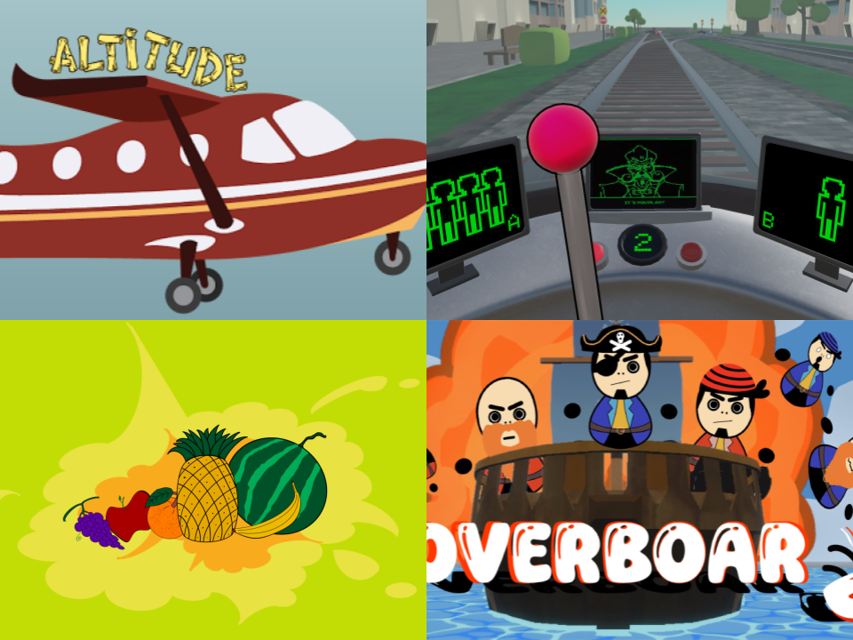
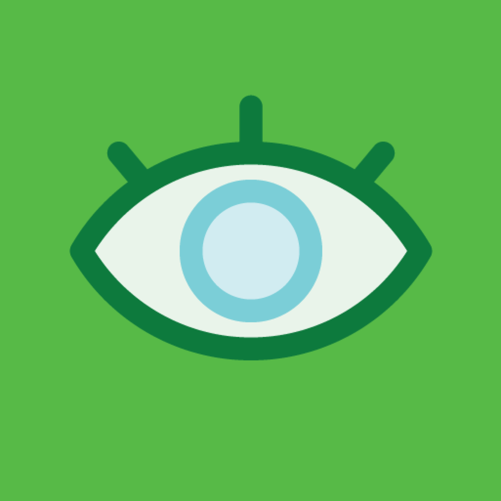

Ben Morris
M.S. Entertainment Technology (CMU, ’27)
B.S. Engineering with Computing (Olin, ’24)
About Me
I’m a software and robotics engineer passionate about building interactive systems, autonomous robots, and immersive entertainment technology. My experience spans from robotics startups and government research projects to creative side projects in game development and theater.
Experience Highlights
- Robotics Software Engineer, Tutor Intelligence (2024–2025): Increased sensor reliability by 80% and optimized robotic palletizing through feature development and manipulation redesign.
- Software Engineer, Senior Capstone (2023–2024): Built a LiDAR-based blindzone calculator with IIHS and the Volpe Center, improving accuracy by 85%.
- Software Engineer, Olin College Computing Infrastructure (2023): Designed and implemented Easel, a command-line tool to work with Canvas, Olin's LMS
- Hummingbird Subteam Lead, Olin College RoboLab (2022): Made a custom path planning algorithm for swarms of drones, implemented unique localization with Ardupilot in Python and C.
- Instructor & Course Assistant, Olin College (2022-2024): Taught Complexity Science and assisted instructors for Software Design and Foundations of Computer Science.
- Software Researcher, OCCAM Lab (2021): Advanced SLAM research with LiDAR, AprilTags, and V/IO, boosting prototype map accuracy by 75% for accessibility applications.
Skills
Languages
Python, Java, C/C++, C#, MATLAB, Swift, JS, SQL, Haskell, OCaml
Python, Java, C/C++, C#, MATLAB, Swift, JS, SQL, Haskell, OCaml
Tools
ROS2, Unity, Perforce, Git/GitHub, Ubuntu, Flask, Django, Azure ML
ROS2, Unity, Perforce, Git/GitHub, Ubuntu, Flask, Django, Azure ML
Specialties
Computer Vision, LiDAR, AR/VR, Robotics Software, Interactive Systems
Computer Vision, LiDAR, AR/VR, Robotics Software, Interactive Systems
Projects

Building Virtual Worlds
A set of two-week game prototypes in Unity with unique controllers

Invisible Map (OCCaM Lab)
Accessible indoor navigation via SLAM with LiDAR and AprilTags.
More Projects
Franklin W. Olin Players
President, director, and actor across six productions
President, director, and actor across six productions
Automatic Chess Board
Physical board that moves pieces automatically
Physical board that moves pieces automatically
Autonomous Rover
Rover project with autonomy and navigation stack
Rover project with autonomy and navigation stack
Easel
Git-like CLI tool to improve Canvas LMS workflows
Git-like CLI tool to improve Canvas LMS workflows
SAFEcert
Assistive certification tool for service animal trainers
Assistive certification tool for service animal trainers
Tell the Story
Communications and storytelling through design
Communications and storytelling through design
Why is SAT NP-Complete?
Educational deep dive into computational complexity
Educational deep dive into computational complexity
Arcade Games
Classic games remade as an exploration into C
Classic games remade as an exploration into C
Noodle Maps
A small webapp made to experiment with a custom CI/CD framework
A small webapp made to experiment with a custom CI/CD framework
CV Pong
Pong controlled with hand gestures via computer vision
Pong controlled with hand gestures via computer vision
Advent of Code
My ongoing coding challenge solutions (2019–present)
My ongoing coding challenge solutions (2019–present)
Script Creator
App for theater script formatting
App for theater script formatting